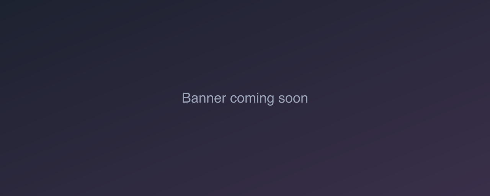

Abliteration matrix, part 1: the setup
The private Telegram bot needed an answer the gallery never had to give: for each model family, which build follows adult prompts faithfully without losing the safety behaviour we rely on? The candidates are abliterated text encoders, "heretic" encoders, NSFW LoRAs and community checkpoint merges. Instead of arguing from model cards, we rendered all of them side by side. Results are in part 2.
First, an audit: what actually refuses?
Before swapping encoders to get rid of refusals, we checked where the refusals come from. The answer was almost nowhere:
- There is no application-level content filter in localimagegen or the bot.
- The only refusal in the stack is Ideogram's learned grey card: the flat frame from the grey rectangle incident. The vendor says non-JSON prompts trigger false positives, and the bot does not expose Ideogram anyway.
- A circulating claim that ComfyUI throws away everything after 77 CLIP tokens was not supported. ComfyUI splits long prompts into chunks.
So the matrix is about prompt fidelity, meaning whether the model draws what was asked, not about defeating a filter. The bot's own safety negatives and its refusal stay exactly as they are. Nothing in this experiment weakens them.
The design
- 46 variants across 9 families: 14 baselines (the gallery's own recipe)
and 32 candidates. Each candidate is a baseline's workflow JSON plus a short
list of edits in a tiny grammar:
setan input, change a node'sclasswhile keeping its links, insert aloraafter a node, orbypassone. Every variant records its exact edits, steps, files and a note citing the publisher (data/abliteration-matrix/matrix.json). - Three prompts, described here by category only: a neutral animal scene; an innocent, non-sexual scene with a child; and an adult boudoir scene. The innocent prompt is the guard rail: any variant that sexualises it is disqualified, whatever it does with the adult prompt.
- Three seeds (1234, 5678 and 9012), so one good image can't carry a variant.
- Dialect-aware prompts. Prose models get prose, and tag models (Pony, NoobAI, Illustrious) get Booru tags with their own quality prefixes.
- Every render logs wall and exec time, cold or warm load, and peak memory
(RSS, system, swap and MPS) to
results.jsonl. A small local rating page sits beside the gallery pagematrix.html.
NAS-first, because the disk is not big enough
All the model files together are about 136 GB, which is more than the laptop can hold at once. So every file goes to the NAS first, by URL, with its hash registered there. The runner then copies just the files the next variant needs into ComfyUI's model folders. When free space drops below 12 GB it deletes local copies, but only of files whose hash the NAS already holds. A file that exists only on the laptop is never deleted. Gated or API-blocked downloads (Miraclein, KleiNova) were left out on purpose rather than worked around.
What part 2 has to answer
For each family: is any candidate better than the baseline on the adult prompt, safe on the innocent prompt and fast enough for a chat bot? The results, and the seven models that went into the bot, are in part 2.